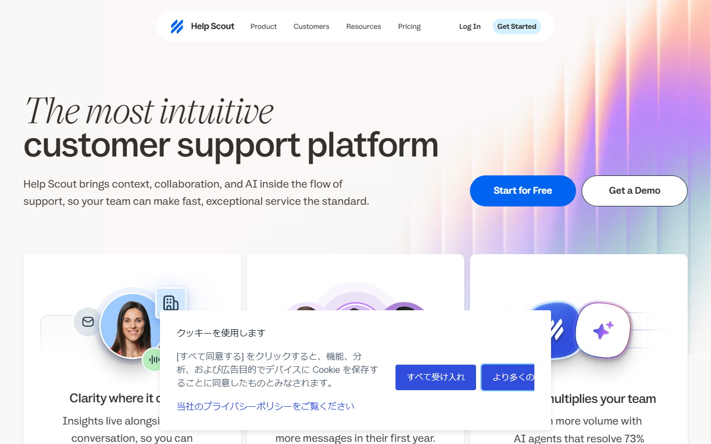

カスタマーサポートツールおすすめ5選｜料金・日本語対応・用途を比較
カスタマーサポートツールは、メールやチャットの問い合わせを担当者へ振り分け、対応履歴を共有する仕組みです。海外SaaS5製品を、窓口、課金単位、無料枠、日本語対応から比べます。
カスタマーサポートツールおすすめ5選の早見
- Gorgias：EC向け／30日試用／日本語UI未確認
- Tidio：チャット向け／Freeあり／日本語UIなし
- Help Scout：共有受信箱／5人まで無料
- Zendesk：総合窓口／14日試用／日本語UIあり
- SupportBee：共有メール／14日試用
迷ったらTidioかHelp Scoutから検討
Webチャットを置きたいならTidio、メール対応を複数人で共有したいならHelp Scoutが入り口です。どちらにも常設の無料プランがあり、Tidioは月50件の課金対象会話、Help Scoutは月100コンタクトまで試せます。
TidioのFreeで使える会話数と、AI応答を追加する場合の料金を確認できます。
Help Scoutの無料枠に含まれるユーザー数、Inbox、Docsの条件が分かります。
5製品の違いを用途別に早見
ECの注文情報と問い合わせを結びつけたいならGorgias。サイト訪問者へその場で返すならTidioです。共有受信箱を小さく始めるならHelp Scout、複数チャネルと日本語画面が必要ならZendeskが候補。SupportBeeはメール中心で、複雑な構成を避けたいチームに合います。
国内製品を含む一般的な比較では、Zendeskや問い合わせ管理サービスが多く並びます。本記事は海外SaaSに絞り、日本から契約するときに分かりにくい課金単位と日本語対応を中心に選びました。
カスタマーサポートツールを選ぶ5つの基準
機能数だけで選ぶと、使わない窓口やAIへ費用を払いかねません。現在届いている問い合わせを数え、どこで受け、誰が返しているかを先に書き出します。
比較用のメモには、平常月と繁忙月の件数、返信する担当者数、引き継ぎ回数を残します。さらに、初回返信までの時間と未対応件数を導入前後で見れば、ツールを替えた効果を判断できます。新機能の多さより、今起きている見落としを減らせるかを優先します。
問い合わせ窓口を決める
メール、Webチャット、ECストア、電話、SNSでは必要な機能が違います。問い合わせの大半がメールなら、共有受信箱から始めるのが素直です。購入前の質問が多いサイトでは、ライブチャットやAI応答を比較します。
すべての窓口を一度に移す必要はありません。最も件数の多い窓口を1つ決め、担当分けと履歴共有が改善するかを試します。
チケット・共有受信箱の必要性を見る
同じ問い合わせへ二重に返信したり、担当者の個人メールに履歴が残ったりしているなら、共有受信箱が役立ちます。担当、状態、過去のやり取りを1か所で追えるかを確認します。
件数が少なく1人で返している間は、専用ツールが過剰な場合もあります。引き継ぎが週に何度も発生するようになったら導入を検討してください。
EC・CRM連携を見る
ECでは、問い合わせ画面から注文内容や配送状況を見られるかが判断材料です。GorgiasはShopify中心の問い合わせ管理に向きます。一般のBtoBサポートでは、CRMや営業担当との情報共有を優先します。
「連携あり」だけでは足りません。閲覧だけか、更新までできるか。利用予定のプランに含まれるかも見ます。
席数か会話数か課金単位を見る
5製品の料金は、同じ月額でも基準が違います。
- Gorgias：処理するチケット数
- Tidio：課金対象の会話数とAI会話数
- Help Scout：ユーザー数
- Zendesk：エージェント数
- SupportBee：席数
繁忙月だけ問い合わせが増える事業では、会話・チケット課金の上限が総額を左右します。人数が増えるサポート部門では、席単価を掛けた金額で比較してください。
日本語UIとサポートを分ける
日本語で画面を操作できることと、日本語で問い合わせられることは別です。さらに、担当者画面と顧客向けウィジェットでも対応言語が異なります。
5製品のうち日本語UIを確認できるのはZendeskです。Tidioは担当者画面に日本語がありませんが、顧客向け表示は手動翻訳でき、Lyroは日本語応答に対応します。
おすすめカスタマーサポートツール5選
5製品を、問い合わせが届く場面ごとに紹介します。掲載順は、EC、チャット、共有受信箱、総合窓口、メール中心という役割に沿っています。
Gorgias｜Shopify中心のEC問い合わせをまとめたい企業向け
Gorgiasは、ECの注文情報を見ながら顧客対応を進めたい企業の候補です。料金はチケット処理数を基準に決まります。公開されているプラン例では、Proが月$360で2,000件、Advancedが月$900で5,000件です。
新規Helpdeskは30日間、カードなしで試せます。ただし試用中は送信数に制限があり、ヘルプセンターは作れません。AI Agent、Voice、SMSは別料金なので、問い合わせ管理の本体料金と分けて見てください。
管理画面の日本語対応は未確認です。顧客向けChatウィジェットは日本語を含む複数言語に対応します。支払いはカードで、Shopifyから導入した場合はShopify請求にまとめられます。
導入前には、返品、配送遅延、住所変更など、注文情報を見ながら返す問い合わせを10件ほど選びます。担当者が別画面へ移らず処理できるかを試すと、EC特化の利点を判断できます。
月間チケット数を選び、Helpdesk本体と追加機能の費用を分けて確認できます。
Tidio｜ライブチャットとAI応答を小さく試したい企業向け

Tidioは、Webサイトのチャットを一次窓口にしたい企業向けです。Freeは月50件の課金対象会話と10席を含みます。Lyro AI Agentは累計50会話まで、Flowsは月100訪問者まで無料です。
Starterは年払い表示で月$24.17、月100会話。Growthは月250会話で$49.17からです。AI会話の有料枠は別に月$32.50から。7日間トライアルはカード不要で、終了後は自動でFreeへ戻ります。
担当者画面は日本語非対応です。一方、ウィジェットの文言は手動で日本語へ書き換えられます。Lyroは顧客の言語を検出し、日本語を含む48言語で応答します。
試すときは、営業時間内は担当者へ渡し、営業時間外だけAIへ任せるなど役割を分けます。AIが答えられない質問を人へ引き継げるか、同じ顧客の会話が分断されないかも見てください。
Free、Starter、Growthの会話数と、Lyroを追加した場合の条件を見比べられます。
Help Scout｜共有受信箱とヘルプセンターを少人数で使いたい企業向け

Help ScoutのFreeは5ユーザー、Inbox 1件、Docs 1件、月100コンタクトまで。問い合わせ用メールを共有し、簡単なヘルプセンターも同時に始めたい小規模チームに合います。
有料プランは月払いでStandardが1ユーザー月$25、Plusが$45、Proが$75です。StandardとPlusには15日間の試用があり、カードは要りません。人数が6人以上になる場合は、必要席数を掛けて予算を出します。
支払いには主要クレジットカードを使えます。年払いの総額が$2,500を超えると、銀行送金にも対応します。請求書はPDFで取得でき、メール送付も可能です。
無料枠で検証するなら、1つの代表メールアドレスだけをInboxへつなぎます。担当者の割り当て、社内メモ、返信後の状態変更までを一連で試すと、個人メールとの差が分かります。
無料枠から有料の共有受信箱へ広げる場合の、席単価と機能差を確認できます。
Zendesk｜日本語UIを含む総合的な窓口を整えたい企業向け

Zendeskは、メールだけでなく複数チャネルをまとめ、日本語画面で担当者が対応したい企業の候補です。常設無料プランはありませんが、14日間のトライアルはカード不要で始められます。
年払いの月額換算は、Support Teamが1エージェント$19、Suite Teamが$55、Suite Professionalが$115です。年払いは月払いより20%安くなります。問い合わせ窓口をどこまでまとめるかで、SupportとSuiteを選び分けます。
日本語UI、公式日本語サイト、日本語ヘルプがあります。担当者による日本語サポートの範囲は、公式公開情報では確認できません。
14日間ですべてを作り込むより、最初はメールともう1チャネルに絞ります。受付から担当割り当て、解決、再開までを確認し、必要な権限と通知だけを残すと評価しやすくなります。
日本語の料金案内で、SupportとSuiteの機能範囲を比較できます。
SupportBee｜メール中心の共有対応をシンプルに始めたい企業向け
SupportBeeは、共通のサポート用メールを複数人で扱いたいチーム向けです。常設無料プランはなく、試用期間は14日間。料金は席単位で決まります。
Startupは年払いで1席月$17、月払いで$20です。Enterpriseは年払い$21、月払い$25。担当者数が変わると総額も直接増減します。
管理画面とサポートの日本語対応は確認できません。請求はStripeの顧客ポータルで管理し、過去の請求書と領収書をダウンロードできます。解約はSupportBeeへの連絡が必要です。
多チャネル対応よりも、共有メールの担当漏れを減らしたいチームに絞って比べます。試用時には、担当者の変更履歴と検索結果から、前回対応をすぐ探せるかを確かめてください。
StartupとEnterpriseの席単価、月払いと年払いの差を確認できます。
EC・チャット・共有メールで向くツールは変わる
この節では、試用時に見る数値と機能を場面別に絞ります。製品名から選ぶ前に、実際の問い合わせへ当てはめます。
EC注文情報と一緒に対応する
ECでは、繁忙月のチケット数と、問い合わせ画面から更新できる注文情報を見ます。注文確認だけで足りるか、返品や住所変更まで扱うかをテスト項目にします。
Webチャットを一次窓口にする
Webチャットでは、有人対応へ渡す条件と営業時間外の受付を試します。AI応答を使う場合は、通常の会話枠とAI会話枠を分けて予算を立ててください。
無料チャットを始め、問い合わせが増えた場合の会話数別プランへ進めます。
メール窓口を複数人で共有する
共有メールでは、担当変更の履歴と社内メモが残るかを見ます。Inboxを分ける数、返信する人数、月間コンタクト数をそろえると、席課金と無料枠を比べられます。
複数チャネルを一元化する
複数チャネルをまとめる場合は、最初にメールともう1窓口だけを接続します。担当者権限、通知、未対応一覧の3点を見れば、設定量を増やさず評価できます。
無料枠・試用期間と課金単位を比べる
常設無料があるのはTidioとHelp Scoutです。ほかの3製品は、試用期間が終わると有料契約が必要になります。
無料プランがあるTidioとHelp Scout
- Tidio：月50件の課金対象会話、10席
- Help Scout：5ユーザー、Inbox 1件、Docs 1件、月100コンタクト
Tidioは会話数、Help Scoutはユーザー数とコンタクト数を見る設計です。無料枠の数字だけでなく、実際の問い合わせをどちらの単位で数えるかも確かめます。
無料トライアルから始める3製品
- Gorgias：30日間、カード不要
- Zendesk：14日間、カード不要
- SupportBee：14日間
試用期間では、画面を見るだけでなく、担当の振り分け、引き継ぎ、検索まで行います。Gorgiasは試用中にヘルプセンターを作れない点にも注意してください。
席数・会話数・チケット数の違い
1ドル=157円換算（執筆時点の目安。為替で変動）では、Help Scout Standardの$25は約3,925円、Zendesk Support Teamの$19は約2,983円です。いずれも1人分の金額。10人なら10倍です。
TidioやGorgiasは問い合わせ量で上位プランが必要になるため、人数だけでは総額が出ません。過去3か月の平均と繁忙月を数え、上限を超える月がどの程度あるかを見ます。
無料枠を超えた後の席単価を、月払いの3プランで比較できます。
日本語対応・日本からの支払い・請求書
日本語は、担当者画面、顧客画面、AI応答、有人サポートの4つに分けます。どれか1つが日本語でも、すべてに対応するとは限りません。
日本語UIを確認できるのはZendesk
Zendeskは日本語UIと日本語ヘルプがあります。Gorgias、Help Scout、SupportBeeの日本語管理画面は確認できません。未確認の製品を日本語非対応とは断定せず、試用画面で言語設定を見てください。
Tidioは顧客向け表示とAI応答を分けて見る
Tidioの担当者画面は日本語に非対応です。チャットウィジェットは文言を手動で日本語へ変更でき、訪問者のブラウザ言語に合わせて切り替えられます。会話そのものの自動翻訳ではありません。
Lyroは顧客の言語を検出し、日本語で応答できます。ウィジェットの表示設定とAIの言語機能は別です。
カード・銀行振込・請求書の条件を確認する
5製品ともカード決済の入口があります。Help Scoutは年払い総額$2,500超、TidioはPlus・Premiumで銀行送金を利用できます。Zendeskは契約条件により銀行振込などもあります。
請求書は5製品で発行または取得方法を確認できます。日本の適格請求書の扱いは一律ではありません。海外SaaSの税務処理は、必要に応じて税理士に確認してください。
導入前に確認したいこととよくある質問
契約前には、データの移行、担当者権限、無料枠の超過、解約後の扱いを確認します。無料で始めても、履歴を移せなければ切り替えの負担が増えます。
既存メールアドレスと履歴を移せるか
今使っているサポート用メールを接続できるかを見ます。過去の履歴を取り込む場合は、対象期間と添付ファイルも確認します。最初は新着だけをつなぎ、古い履歴を参照用に残す方法もあります。
切り替え日は、旧受信箱と新ツールの両方に届く状態を長く続けないようにします。二重返信を防ぐため、どちらを正本にするかを決め、転送設定を少人数でテストします。送信者名と返信先が顧客からどう見えるかも確認します。
担当者権限と個人情報の扱い
管理者、担当者、閲覧のみの役割を分けます。退職者のアカウント停止、添付ファイルの扱い、顧客情報を出力できる人も決めてください。保存地域や認証規格は、各社の契約書とセキュリティ資料で確かめます。
テスト用の問い合わせには、実在する顧客の個人情報を使わない方法もあります。本番接続の前に、権限の弱い担当者から管理設定や一括出力へ進めないことを確認してください。
無料枠を超えたときの請求
Tidioは会話数、Help Scoutはコンタクト数が上限です。超過後の自動アップグレードや受付停止は、公式公開情報から一律の条件を確認できません。上限へ達する前に、アカウント内の通知と有料化条件を確認します。
予算表は最小価格だけで作らず、繁忙月の問い合わせ量を入れます。会話が翌月にまたがる場合の数え方や、AIが返した会話も対象になるかは、請求画面の定義を優先してください。
解約後にデータへアクセスできるか
Tidioは次回請求日まで使った後にFreeへ移ります。GorgiasとZendeskも請求期間末に解約されます。Help Scoutはアカウント削除後すぐアクセスできなくなり、60日後にデータが完全削除されます。必要な履歴は、解約前に書き出してください。
まとめ：問い合わせ窓口と課金単位から選ぶ
最も多い問い合わせ窓口を1つ選び、繁忙月の件数で費用を試算します。次に、担当者全員が同じ履歴を見られるかを無料枠や試用期間で確かめます。
無料枠から試すならTidioかHelp Scout
無料枠では、会話数で数えるTidioと、ユーザー数・コンタクト数で数えるHelp Scoutの差が出ます。平常月に加えて、繁忙月の件数も当てはめてください。
EC・総合窓口は試用期間で確認
Gorgiasは注文情報との連携、Zendeskは使うチャネルと権限を試します。SupportBeeでは共有メールの担当分けと検索を確認。機能一覧より、毎日の問い合わせが最後まで処理できるかを優先します。
月50会話のFreeから、Webチャットの受付を始められます。
5人までのFreeで、共有受信箱とヘルプセンターを試せます。